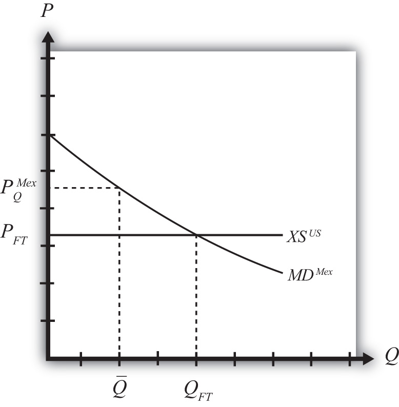

The small country assumption means that the country’s imports are a very small share of the world market—so small that even a complete elimination of imports would have an imperceptible effect on world demand for the product and thus would not affect the world price. Thus when a quota is implemented by a small country, there is no effect on the world price.
To depict the price effects of a quota, we use an export supply/import demand diagram shown in Figure 7.26 "Depicting a Quota Equilibrium: Small Country Case". The export supply curve is drawn as a horizontal line since the exporting country is willing to supply as much as the importer demands at the world price. The small importing country takes the world price as exogenous since it can have no effect on it.
Figure 7.26 Depicting a Quota Equilibrium: Small Country Case
When the quota is placed on imports, it restricts supply to the domestic market since fewer imports are allowed in. The reduced supply raises the domestic price. The world price is unaffected by the quota and remains at the free trade level. In the final equilibrium, two conditions must hold—the same two conditions as in the case of a large country, namely,
and
This implies that, in the case of a small country, the price of the import good in the importing country must rise to the level at which the import demand is equal to the quota level. Export supply merely falls to the lower level now demanded.
Jeopardy Questions. As in the popular television game show, you are given an answer to a question and you must respond with the question. For example, if the answer is “a tax on imports,” then the correct question is “What is a tariff?”